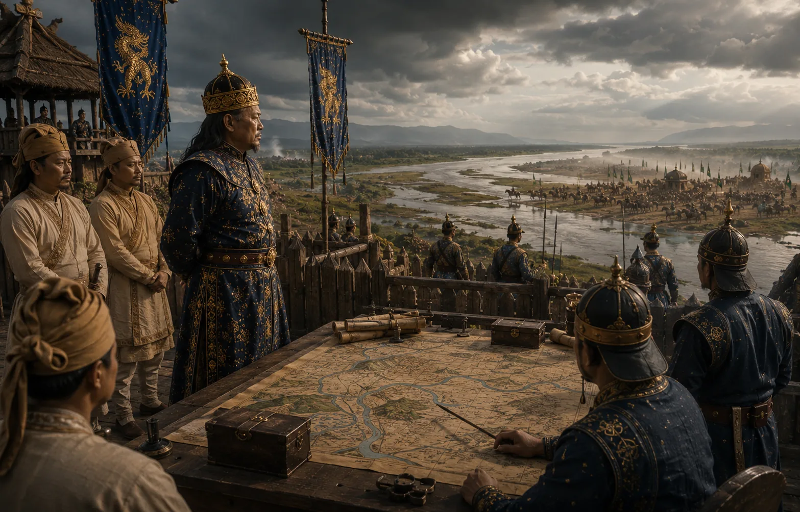

Treaty of Asurar Ali and Western Defense Line
1639 · Against the Mughal Empire

Following repeated repulses of Mughal invasions, Pratap Singha signs the Treaty of Asurar Ali (1639) with Allah Yar Khan, formalizing the Barnadi River as the frontier.
Sources have not yet been catalogued for this record.
People: Allah Yar Khan, Momai Tamuli Borbarua, Pratap Singha (Susenghphaa)
Open this scene in the interactive archive · Follow this event on MAP